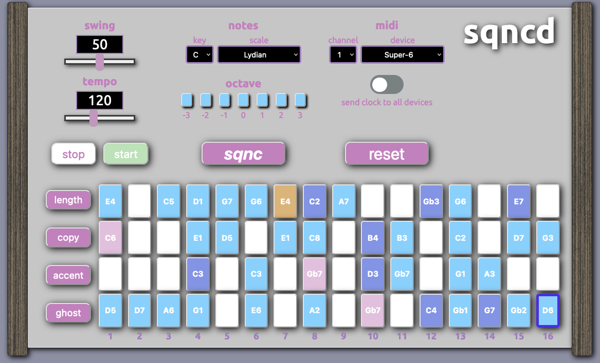

sqncd
midi sequencer and random pattern generator

- 64 step sequencer
- option to randomly assign notes based on key and scale selection
- sqnc button generates a random pattern
- add up to 3 octaves up or down
- accents and ghost notes
- instantly delete all steps with reset button
- copy from step to step
- choose length of pattern
- tempo from 4bpm to 300bpm
- swing value from 0 to 100
- send midi notes to an instrument connected via usb
- option to send clock to all instruments connected via usb